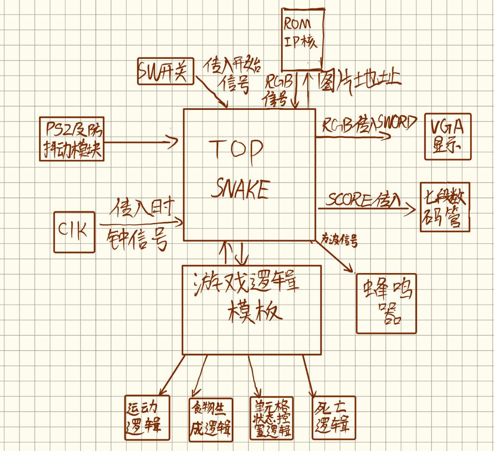
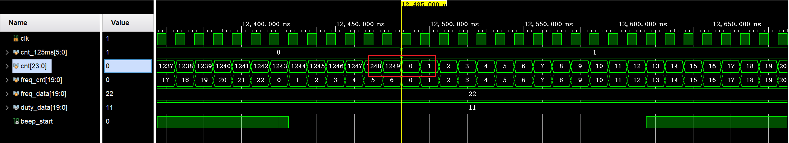
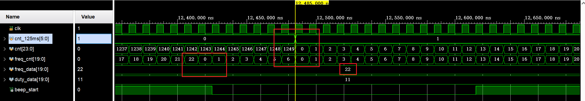
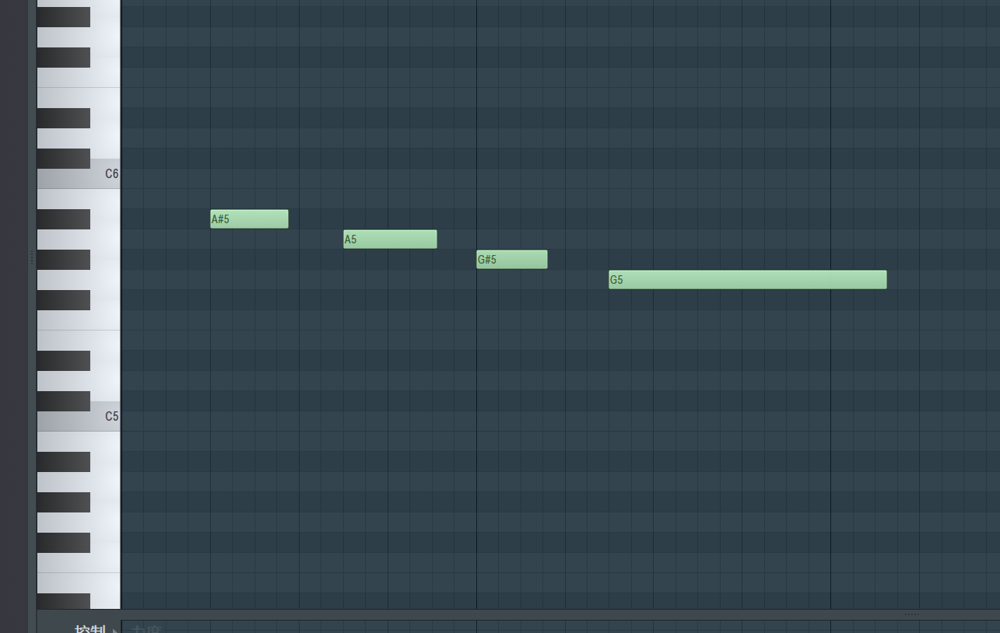
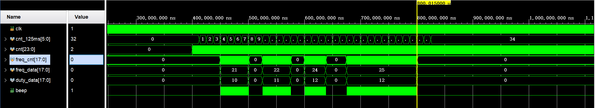

逻辑设计思路
整体设计
贪吃蛇（Snake）是一个起源于1976年的街机游戏 Blockade。 在游戏中，玩家操控一条细长的直线（俗称蛇或虫），它会不停前进，玩家只能操控蛇的头部朝向（上下左右），一路拾起触碰到之物（或称作“豆”），并要避免触碰到自身或者其他障碍物。每次贪吃蛇吃掉一件食物，它的身体便增长一些。 本程序设计了简易版本的贪吃蛇游戏，包含开始和结束界面以及游玩界面，四周为不可穿越的障碍物，蛇可以通过吃下三种不同大小的Food来获得1-3的得分以及长度的增加。

采用Top-Down设计思路，由top模块来组织连接其他子模块，其中主要的功能模块有Ps2,Run（运动模块）,VGA,State（状态机）,DispNum（数码管显示）,beep（蜂鸣器）;使用IP核来存储图片等数据。
将640*480的屏幕，以16*16为单元格，划分为40*30的区域。 我们将每个单元格给予一个state状态值，分为 `0: 背景格，1: 蛇头，2: 蛇身，3: Small_Food，4: Medium_Food，5: Large_Food，6: 死亡格。
1.PS2设计思路
运行原理
PS/2 通信协议是一种双向同步串行通信协议。通信的两端通过 CLOCK(时钟脚)同步，并通过国 DATA(数据脚)交换数据。一般两设备间传输数据的最大时钟频率是 33kHz，大多数 PS/2 设备工作在 10--20kHz。推荐值在 15kHz 左右，也就是说，CLOCK 高、低电平的持续时间都为 40us。每一数据帧包含 11—12 位，具体含义如下图示。 |数据|含义| |---|---| 1个起始位|总是逻辑 0 8个数据位|(LSB)地位在前 1 个奇偶校验位|奇校验 1 个停止位|总是逻辑 1 1 个应答位|仅用在主机对设备的通信中
PS/2 到主机的通信时序如下图所示。数据在 PS/2 时钟的下降沿读取，PS/2 的时钟频率为 10—16.7kHz。对于 PS/2 设备，一般来说从时钟脉冲的上升沿到一个数据转变的时间至少要有 5us；数据变化到下降沿的时间至少要有 5us，并且不大于 25us，这个时序非常重要应该严格遵循。主机可以再第 11 个时钟脉冲停止位之前把时钟线拉低，使设备放弃发送当前字节，当然这种情况比较少见。在停止位发送后设备在发送下个包前应该至少等待 50us，给主机时间做相应的处理。不主机处理接收到的字节时一般会抑制发送(主机在收到每个包时通常自动做这个)。在主机释放抑制后，设备至少应该在发送任何数据前等 50us。
 该程序中我们需要用到上下左右四个按键，对应ps2键盘的通码表进行代码编写。
该程序中我们需要用到上下左右四个按键，对应ps2键盘的通码表进行代码编写。

代码思路：
1.1 输入输出信号
module ps2(
input clk,
input rst,
input ps2_clk,
input ps2_data,
output reg [8:0] data
);
reg [1:0] clk_state;
wire neg; // 探测ps2_clk的负边沿
assign neg = ~clk_state[0] & clk_state[1];
reg [3:0] r_state;// 计时
reg [7:0] r_data; // 存储临时数据
reg f,e; //是否特殊数据
always @(posedge clk or negedge rst) //初始化clk_state
if(!rst)
clk_state <= 2'b00;
else
clk_state <= {clk_state[0], ps2_clk};
always @(posedge clk or negedge rst) begin //初始化数据
if(!rst) begin
r_state <= 4'b0000;
r_data <= 8'b00000000;
f <= 1'b0;
e <= 1'b0;
data <= 9'b000000000;
end
else if(neg) begin
if(r_state > 4'b1001) //读取完一整串数据后重置计时信号
r_state <=4'b0000;
else begin
if(r_state < 4'b1001&&r_state>4'b0)
r_data[r_state-1]<= ps2_data; //存入ps2_data
r_state <= r_state + 1'b1;
end
end
else if(r_state==4'b1010&&|r_data)begin
if(r_data ==8'hf0)
f <=1'b1;
else if(r_data ==8'he0)
e <=1'b1;
else
if(f)begin //代表断码，重置信号
data<=9'b0;
f<=1'b0;
e<=1'b0;
end
else if(e)begin //在data头部输入1代表已经接受e信号
e<=1'b0;
data <={1'b1,r_data};
end
else
data <= {1'b0,r_data};
r_data <= 8'b00000000;
end
end
endmodule
1.2 转化为方向信息以及实现键盘防抖动
//防抖动以及输出上下左右
module ps2_dlc(
input clk,
input rst,
input ps2_clk,
input ps2_data,
output reg [1:0]dir //direction:00up;01down;10left;11right
);
wire [8:0]data;
reg [7:0]all; //[1:0]all 为11代表是up [3:2]代表down.....
ps2 ps2(
.clk(clk),
.rst(rst),
.ps2_clk(ps2_clk),
.ps2_data(ps2_data),
.data(data)
);
initial begin
all<=8'b00000000;
dir<=2'b11;
end
always @(posedge clk or negedge rst)begin
if(!rst) begin
all<=8'b00000000;
end
else begin
all[1:0]<={all[0],data==9'h175}; //防抖动，连续输入两次才可以读入信号
all[3:2]<={all[2],data==9'h172};
all[5:4]<={all[4],data==9'h16b};
all[7:6]<={all[6],data==9'h174};
end
end
always @(posedge clk or negedge rst)begin
if(!rst)
dir <=2'b11;
else begin
case(all)//根据all数值输出方向信息
8'b00000011:dir<=2'b00;
8'b00001100:dir<=2'b01;
8'b00110000:dir<=2'b10;
8'b11000000:dir<=2'b11;
default:;
endcase
end
end
endmodule
2.VGA设计思路
2.1 clk_gen模块
此模块产生 $25MHz$ 的 $clk$ 信号，用于 $VGA$ 的运作。
module clk_gen(
input clk, // 100 MHz
output vga_clk // 25 MHz
);
reg [1:0] clkdiv;
initial clkdiv = 2'b0;
always @(posedge clk) clkdiv = clkdiv + 2'b1;
assign vga_clk = clkdiv[1];
endmodule
2.2 vga_ctrl模块
此模块已提供。接收像素点的色彩信息（$Din$），输出当前像素点的坐标（$row,col$）和 $VGA$ 有关的变量（$R,G,B,HS,VS$）。
module vga_ctrl(
input clk, // vga clk = 25 MHz
input rst,
input [11:0]Din, // bbbb_gggg_rrrr, pixel
output reg [8:0]row, // pixel ram row address, 480 (512) lines
output reg [9:0]col, // pixel ram col address, 640 (1024) pixels
output reg rdn, // read pixel RAM(active_low)
output reg [3:0]R, G, B,// red, green, blue colors
output reg HS, VS // horizontal and vertical synchronization
);
// h_count: VGA horizontal counter (0~799)
reg [9:0] h_count; // VGA horizontal counter (0~799): pixels
initial h_count = 10'h0;
always @ (posedge clk) begin
if (rst) h_count <= 10'h0;
else if (h_count == 10'd799)
h_count <= 10'h0;
else h_count <= h_count + 10'h1;
end
// v_count: VGA vertical counter (0~524)
reg [9:0] v_count; // VGA vertical counter (0~524): pixel
initial v_count = 10'h0;
always @ (posedge clk or posedge rst) begin
if (rst) v_count <= 10'h0;
else if (h_count == 10'd799) begin
if (v_count == 10'd524) v_count <= 10'h0;
else v_count <= v_count + 10'h1;
end
end
// signals, will be latched for outputs
wire [9:0] row_addr = v_count - 10'd35; // pixel ram row addr
wire [9:0] col_addr = h_count - 10'd143; // pixel ram col addr
wire h_sync = (h_count > 10'd95); // 96 -> 799
wire v_sync = (v_count > 10'd1); // 2 -> 524
wire read = (h_count > 10'd142) && // 143 -> 782
(h_count < 10'd783) && // 640 pixels
(v_count > 10'd34) && // 35 -> 514
(v_count < 10'd525); // 480 lines
// vga signals
always @ (posedge clk) begin
row <= row_addr[8:0]; // pixel ram row address
col <= col_addr; // pixel ram col address
rdn <= ~read; // read pixel (active low)
HS <= h_sync; // horizontal synchronization
VS <= v_sync; // vertical synchronization
R <= rdn ? 4'h0 : Din[3:0]; // 3-bit red
G <= rdn ? 4'h0 : Din[7:4]; // 3-bit green
B <= rdn ? 4'h0 : Din[11:8]; // 2-bit blue
end
endmodule
2.3 vga_screen_pic模块
核心模块，输出当前像素点的色彩信息并提供给 $vga_ctrl$ 模块。
2.3.1 IP核的生成
图片制作
部分图片是由 $AI$ 生成并使用 $PS$ 进行一定处理后产生。
游戏开始画面

游戏结束画面

游戏中画面
蛇的身体：

蛇的头部：

死亡格：

小食物：

中食物：
大食物：

图片处理
所有图片导出为24位 $.bmp$ 文件，并使用 $Matlab$ 将其转换为符合格式的 $.coe$ 文件。
转换函数如下：
function img2coe(path,name)
% 利用imread函数把图片转化为一个三维矩阵
image_array = imread(path);
% 利用size函数把图片矩阵的三个维度大小计算出来
% 第一维为图片的高度，第二维为图片的宽度，第三维为图片的RGB分量
[height,width,z]=size(image_array);
red = image_array(:,:,1); % 提取红色分量，数据类型为uint8
green = image_array(:,:,2); % 提取绿色分量，数据类型为uint8
blue = image_array(:,:,3); % 提取蓝色分量，数据类型为uint8
% 把上面得到了各个分量重组成一个1维矩阵，由于reshape函数重组矩阵的
% 时候是按照列进行重组的，所以重组前需要先把各个分量矩阵进行转置以后再重组
% 利用reshape重组完毕以后，由于后面需要对数据拼接，所以为了避免溢出
% 这里把uint8类型的数据扩大为uint32类型
r = uint32(reshape(red' , 1 ,height*width));
g = uint32(reshape(green' , 1 ,height*width));
b = uint32(reshape(blue' , 1 ,height*width));
% 初始化要写入.coe文件中的RGB颜色矩阵
rgb=zeros(1,height*width);
% 因为导入的图片是24-bit真彩色图片，每个像素占用24-bit，其中RGB分别占用8-bit
% 而我这里需要的是12-bit，其中R为4-bit，G为4-bit，B为4-bit，所以需要在这里对24-bit的数据进行重组与拼接
% bitshift()函数的作用是对数据进行移位操作，其中第一个参数是要进行移位的数据，第二个参数为负数表示向右移，为
% 正数表示向左移，更详细的用法直接在Matlab命令窗口输入 doc bitshift 进行查看
% 所以这里对红色分量先右移4位取出高4位，然后左移8位作为ROM中RGB数据的第11-bit到第8-bit
% 对绿色分量先右移4位取出高4位，然后左移4位作为ROM中RGB数据的第7-bit到第4-bit
% 对蓝色分量先右移4位取出高4位，然后左移0位作为ROM中RGB数据的第3-bit到第0-bit
for i = 1:height*width
rgb(i) = bitshift(bitshift(r(i),-4),8) + bitshift(bitshift(g(i),-4),4) + bitshift(bitshift(b(i),-4),0);
end
fid = fopen( name , 'w+' );
% .coe文件的最前面一行必须为这个字符串，其中16表示16进制
fprintf( fid, 'memory_initialization_radix=16;\n');
% .coe文件的第二行必须为这个字符串
fprintf( fid, 'memory_initialization_vector =\n');
% 把rgb数据的前 height*width-1 个数据写入.coe文件中，每个数据之间用逗号隔开
fprintf( fid, '%x,\n',rgb(1:end-1));
% 把rgb数据的最后一个数据写入.coe文件中，并用分号结尾
fprintf( fid, '%x;',rgb(end));
fclose( fid ); % 关闭文件指针
end
生成后的 $.coe$ 文件格式如下：
memory_initialization_radix=16; // 表示每一行的数据是16进制的
memory_initialization_vector =
5c5, // 每一行都是一个像素点的色彩信息，R，G，B三个通道各4bit
5c5,
5c5,
...
5c5,
5c5,
5c5;
生成IP核
利用 $vivado$ 生成IP核，导入 $.coe$ 文件，选择生成 $ROM$ 。
IP核的调用
模块接口以及变量定义与初始化：
需要说明的是，输入变量 $state$ 由 $run_module$ 模块根据当前像素点坐标得到并提供。
module vga_screen_pic(
input [9:0] pix_x, // 像素点 x 坐标
input [8:0] pix_y, // 像素点 y 坐标
input clk, // 100 MHz
input [1:0] game_state, // 游戏状态
input [2:0] state, // 当前单元格的状态
// 0 背景 1 蛇头 2 蛇身 3 小食物 4 中食物 5 大食物 6 死亡格
output reg [11:0] pix_data_out // 色彩信息
);
parameter H_PIC = 10'd16, // 小图片高度
SCREEN_W_PIC = 19'd640; // VGA 宽度
parameter BLACK = 12'h000, // 背景
GREEN = 12'h0f0, // 蛇头（暂时替代）
YELLOW = 12'hff0, // 蛇身（暂时替代）
RED = 12'hf00, // 死亡格（暂时替代）
BLUE = 12'h00f; // 食物（暂时替代）
wire [7:0] pic_romaddr0; // 小图片的 ROM 地址
wire [18:0] pic_romaddr1; // 大图片的 ROM 地址
wire [11:0] snake_head_data, snake_body_data,
food_s_data, food_m_data, food_l_data,
dead_block_data, game_start_data, game_over_data; // 各个 ROM 里的数据信息
定义了两个函数，用于计算当前像素点所在的单元格的左上角坐标，便于计算相应的地址信息从而获得相应的色彩信息。
function [9:0] cell_x; // 计算像素点对应单元格的左上角 x 坐标
input [9:0] pix_x;
begin
cell_x = (pix_x >> 4) * H_PIC; // 除以 16 并乘以图片的高度
end
endfunction
function [8:0] cell_y; // 计算像素点对应单元格的左上角 y 坐标
input [8:0] pix_y;
begin
cell_y = (pix_y >> 4) * H_PIC;
end
endfunction
计算两个 $ROM$ 地址变量的值：
assign pic_romaddr0 = (pix_x - cell_x(pix_x)) + (pix_y - cell_y(pix_y)) * H_PIC;
assign pic_romaddr1 = pix_x + pix_y * SCREEN_W_PIC; // 大图片的宽度和 VGA 的宽度相同
IP核的调用：
snake_head snake_head0(
.addra(pic_romaddr0),
.clka(clk),
.douta(snake_head_data)
);
snake_body snake_body0(
.addra(pic_romaddr0),
.clka(clk),
.douta(snake_body_data)
);
food_s food_s0(
.addra(pic_romaddr0),
.clka(clk),
.douta(food_s_data)
);
food_m food_m0(
.addra(pic_romaddr0),
.clka(clk),
.douta(food_m_data)
);
food_l food_l0(
.addra(pic_romaddr0),
.clka(clk),
.douta(food_l_data)
);
dead_block dead_block0(
.addra(pic_romaddr0),
.clka(clk),
.douta(dead_block_data)
);
game_start game_start0(
.addra(pic_romaddr1),
.clka(clk),
.douta(game_start_data)
);
game_over game_over0(
.addra(pic_romaddr1),
.clka(clk),
.douta(game_over_data)
);
计算正确的色彩信息：
always @(posedge clk) begin
case (game_state) // 判断游戏状态
2'd0: pix_data_out <= game_start_data; // 0 即游戏待开始，色彩信息为 game_start 图片
2'd1: begin // 1 即游戏进行中
case (state) // 判断单元格的状态
3'd0: pix_data_out <= BLACK; // 0 即背景格，为黑色
3'd1: pix_data_out <= snake_head_data; // 1 即蛇头部
3'd2: pix_data_out <= snake_body_data; // 2 即蛇身部
3'd3: pix_data_out <= food_s_data; // 3 即小食物
3'd4: pix_data_out <= food_m_data; // 4 即中食物
3'd5: pix_data_out <= food_l_data; // 5 即大食物
3'd6: pix_data_out <= dead_block_data; // 6 即死亡格
default: pix_data_out <= BLACK; // 其他状态设置为黑色
endcase
end
2'd2: pix_data_out <= game_over_data; // 2 即游戏结束
default: pix_data_out <= BLACK; // 其他状态设置为黑色
endcase
end
3.蜂鸣器设计思路
蜂鸣器原理
我们板子的蜂鸣器是无源蜂鸣器，因其内部不带震荡源，所以需要PWM方波才能驱动其发声。
PWM方波的频率决定声音的音调，PWM方波的占空比决定声音的响度。所以只需产生不同频率和占空比的PWM方波去驱动无源蜂鸣器，就能让无源蜂鸣器发出想要的声音序列了。
实现步骤
游戏开始音乐
选择合适的音乐，扒谱：

实现原理波形图如下：

我们的 $clk$ 频率为 $100MHz$ ，周期为 $10ns$ ，该音乐的bpm为120，每过半拍（8个16分音符），时间过去1s。以一个16分音符的长度为单位时间，即 $\frac{1}{8}=0.125s=125ms$ ，包括了 $\frac{0.125}{10\times10^{-9}}=12500000$ 个 $clk$ 周期。以 $A4$ 音为例，该音调的频率为 $440Hz$ ，其音波周期为 $\frac{1}{440} = 2272727ns$ ，包括了 $\frac{2272727}{10}=2272723$ 个 $clk$ 周期。其他音同理。
接下来将结合实现原理波形图和代码进行详细解释。
模块接口和变量的定义和初始化：
module beep_gamestart(
input clk,
input [1:0] game_state, // 游戏状态变量
output reg beep
);
reg rst;
reg [23:0] cnt; // 用于计数的信号
reg [19:0] freq_cnt; // 音调频率计数
reg [5:0] cnt_125ms; // 125ms个数计数
reg [19:0] freq_data; // 音调频率
wire [19:0] duty_data; // 占空比
initial begin // 初始化所有 reg 信号
rst = 1'b0;
beep = 1'b0;
cnt = 24'b0;
freq_cnt = 20'b0;
cnt_125ms = 6'b0;
freq_data = 20'b0;
end
parameter TIME_125ms = 24'd12499999, // 125 ms
A4 = 19'd227272, // 440 Hz
D5 = 19'd170357, // 587
C5 = 19'd191204, // 523
B4 = 19'd202428, // 494
FS_4 = 19'd270269, // 370
G4 = 19'd255101, // 392
D4 = 19'd378787, // 264
E4 = 19'd303030, // 330
F4 = 19'd286532, // 349
C4 = 19'd381678; // 262
我们选择占空比为 $50\%$ 的PWM方波：
根据游戏状态信号调整 $rst$ 信号：
always @(game_state) begin
if (game_state == 2'b00) begin // 游戏开始页面
rst = 1'b0; // rst 为 0 时，声波正常产生
end else begin
rst = 1'b1; // rst 为 1 时，声波不产生
end
end
$cnt$ 的调整：
always @(posedge clk or posedge rst) begin
if (rst) begin
cnt <= 24'd0;
end else if (cnt == TIME_125ms) begin // 每当 cnt 达到 TIME_125ms 即每过 1 个时间单位，该变量重置为 0 重新开始计数
cnt <= 24'd0;
end else begin
cnt <= cnt + 1'b1;
end
end

注：testbench文件中修改了某些参数的值，以此来减少仿真时间
$cnt_125ms$ 的调整：
always @(posedge clk or posedge rst) begin
if (rst) begin
cnt_125ms <= 6'd0;
end else if (cnt == TIME_125ms && cnt_125ms == 7'd64) begin // 音乐播放结束时，重置为 0 ，实现循环播放音乐
cnt_125ms <= 6'd0;
end else if (cnt == TIME_125ms) begin // 每过 1 个时间单位，变量值加 1
cnt_125ms <= cnt_125ms + 1'b1;
end
end

$freq_cnt$ 的调整：
always @(posedge clk or posedge rst) begin
if (rst) begin
freq_cnt <= 19'd0;
end else if (freq_cnt >= freq_data || cnt == TIME_125ms) begin // 当频率计数信号大于此时的声音频率，或每当过 1 个时间单位时，该值重置为 0
freq_cnt <= 19'd0;
end else begin
freq_cnt <= freq_cnt + 1'b1;
end
end

$beep$ 的调整：
always @(posedge clk or posedge rst) begin
if (rst) begin
beep <= 1'b0;
end else if (freq_cnt > duty_data) begin // 当频率计数信号大于占空比时，使 PWM 为 1，实现 50% 的占空比
beep <= 1'b1;
end else begin
beep <= 1'b0;
end
end

$freq_data$ 的调整：
always @(posedge clk or posedge rst) begin
if (rst) begin
freq_data <= 19'd0;
end else begin
case (cnt_125ms) // 根据不同的时间段，为该变量赋值不同的频率值
7'd0: freq_data <= A4;
7'd1: freq_data <= A4;
7'd2: freq_data <= A4;
7'd3: freq_data <= A4;
7'd4: freq_data <= D5;
7'd5: freq_data <= D5;
7'd6: freq_data <= A4;
7'd7: freq_data <= A4;
7'd8: freq_data <= C5;
7'd9: freq_data <= C5;
7'd10: freq_data <= C5;
7'd11: freq_data <= C5;
7'd12: freq_data <= B4;
7'd13: freq_data <= A4;
7'd14: freq_data <= FS_4;
7'd15: freq_data <= G4;
7'd16: freq_data <= A4;
7'd17: freq_data <= A4;
7'd18: freq_data <= A4;
7'd19: freq_data <= A4;
7'd20: freq_data <= A4;
7'd21: freq_data <= A4;
7'd22: freq_data <= A4;
7'd23: freq_data <= A4;
7'd24: freq_data <= D4;
7'd25: freq_data <= D4;
7'd26: freq_data <= D4;
7'd27: freq_data <= D4;
7'd28: freq_data <= E4;
7'd29: freq_data <= E4;
7'd30: freq_data <= E4;
7'd31: freq_data <= E4;
7'd32: freq_data <= F4;
7'd33: freq_data <= F4;
7'd34: freq_data <= F4;
7'd35: freq_data <= F4;
7'd36: freq_data <= F4;
7'd37: freq_data <= F4;
7'd38: freq_data <= F4;
7'd39: freq_data <= F4;
7'd40: freq_data <= D4;
7'd41: freq_data <= D4;
7'd42: freq_data <= D4;
7'd43: freq_data <= D4;
7'd44: freq_data <= F4;
7'd45: freq_data <= G4;
7'd46: freq_data <= F4;
7'd47: freq_data <= G4;
7'd48: freq_data <= E4;
7'd49: freq_data <= E4;
7'd50: freq_data <= E4;
7'd51: freq_data <= E4;
7'd52: freq_data <= C4;
7'd53: freq_data <= C4;
7'd54: freq_data <= C4;
7'd55: freq_data <= C4;
7'd56: freq_data <= D4;
7'd57: freq_data <= D4;
7'd58: freq_data <= D4;
7'd59: freq_data <= D4;
7'd60: freq_data <= D4;
7'd61: freq_data <= D4;
7'd62: freq_data <= D4;
7'd63: freq_data <= D4;
default: freq_data <= 19'd0;
endcase
end
end

游戏结束音乐

和游戏开始音乐的实现相同，不同的点在于游戏结束音乐只需要播放一次。可以调整 $cnt_125ms$ 实现播放一次。
always @(posedge clk or posedge rst) begin
if (rst) begin
cnt_125ms <= 6'd0;
end else if (cnt == TIME_125ms && cnt_125ms <= 6'd33) begin
cnt_125ms <= cnt_125ms + 1'b1;
end // 当音乐播放结束后，不再重置为 0，实现只播放一次
end
always @(posedge clk or posedge rst) begin
if (rst) begin
freq_data <= 18'd0;
end else begin
case (cnt_125ms)
5'd0: freq_data <= 18'd0;
5'd1: freq_data <= 18'd0;
5'd2: freq_data <= 18'd0;
5'd3: freq_data <= 18'd0;
5'd4: freq_data <= AS_4;
5'd5: freq_data <= AS_4;
5'd6: freq_data <= AS_4;
5'd7: freq_data <= AS_4;
5'd10: freq_data <= A4;
5'd11: freq_data <= A4;
5'd12: freq_data <= A4;
5'd13: freq_data <= A4;
5'd16: freq_data <= GS_4;
5'd17: freq_data <= GS_4;
5'd18: freq_data <= GS_4;
5'd22: freq_data <= G4;
5'd23: freq_data <= G4;
5'd24: freq_data <= G4;
5'd25: freq_data <= G4;
5'd26: freq_data <= G4;
5'd27: freq_data <= G4;
5'd28: freq_data <= G4;
5'd29: freq_data <= G4;
5'd30: freq_data <= G4;
5'd31: freq_data <= G4;
5'd32: freq_data <= G4;
5'd33: freq_data <= G4;
default: freq_data <= 18'd0;
endcase
end
end

top_beep 模块
module top_beep(
input clk,
input [1:0] game_state,
output reg beep
);
wire beep_start;
wire beep_over;
initial begin
beep = 1'b0;
end
beep_gamestart bp_gs(.clk(clk), .game_state(game_state), .beep(beep_start)); // 调用两个模块
beep_gameover bp_go(.clk(clk), .game_state(game_state), .beep(beep_over));
always @(posedge clk) begin
if (game_state == 2'b00) begin
beep = beep_start; // 游戏待开始状态，beep 为 game_start
end else if (game_state == 2'b10) begin
beep = beep_over; // 游戏结束状态，beep 为 game_over
end
end
endmodule
4.状态机设计思路
module gaming (
input rst,
input gameover,
input start_button,
output reg [1:0] game_state
);
initial begin
game_state = 2'd0; //初始化为开始界面
end
always @(negedge rst or posedge gameover or posedge start_button) begin
if(rst == 1'b0) begin
game_state <= 2'd0;
end
else if(start_button == 2'b1) begin
game_state <= 2'd1;
end
else if(gameover == 2'b1) begin
game_state <= 2'd2;
end
end
endmodule
2'b00:开始界面状态；2'b01:游玩中；2‘b10:游戏结束
游戏初始化为开始界面状态，在游戏开始按钮start_button置1时，会切换为游玩中状态；当游戏结束，从运动模块中传入的gameover信号置1，游戏进入结束状态；当再按下start_button时即可恢复游戏状态为游玩中，继续游戏。
5.运动模块设计思路
5.1 IO信号代码
module run_module(
input clk, //100MHZ
input [1:0] dir, //按下的运动方向
input [1:0] game_state, //游戏状态：0 开始界面， 1 游戏中， 2 结束界面
input [9:0] cur_x,// VGA当前X坐标
input [8:0] cur_y, // VGA当且Y坐标
output [2:0] one_state,//(X,Y)坐标对应
output reg gameover,//传出游戏结束的信息
output reg [15:0] score//得分
);
5.2 定义代码
parameter MAX_LENGTH = 100;
parameter MAX_CNT = 23;
reg [5:0] head_x;
reg [4:0] head_y; //蛇头的坐标
reg [5:0] next_head_x;
reg [4:0] next_head_y; //下一刻蛇头的坐标
reg [5:0] fruit_x;
reg [4:0] fruit_y;//食物坐标
reg [5:0] body_x [MAX_LENGTH:0];
reg [4:0] body_y [MAX_LENGTH:0];//存储蛇身坐标的数组
reg [1:0] current_dir;//当前蛇运动的方向
reg [2:0] state [0:39][0:29];//所有单元的状态信息
reg [23:0] cnt;//计数以分频
reg [1:0] state_pos;//存储上一刻和当前的游戏状态
wire game_clk;//游戏频率（速度）
integer length;
integer i, j;
always @(posedge clk) begin
cnt = cnt + 24'b1;
end
assign game_clk=cnt[MAX_CNT];
//计算转换后的对应单元格坐标
function [5:0] state_x_addr;
input [9:0] pix_x;
begin
state_x_addr = pix_x >> 4; // x
end
endfunction
function [5:0] state_y_addr;
input [8:0] pix_y;
begin
state_y_addr = pix_y >> 4; // y
end
endfunction
assign one_state = state[state_x_addr(cur_x)][state_y_addr(cur_y)];
5.3 初始化
initial begin
cnt = 24'b0;
state_pos = 2'b00;
head_x = 6'd20;
head_y = 5'd15;
next_head_x = 6'd20;
next_head_y = 5'd15;
//fruit_flag = 2'd0;
length = 1'd1;
fruit_x = 6'd25;
fruit_y = 5'd15;
body_x[0] = 6'd19;
body_y[0] = 6'd15;
body_x[1] = 6'd18;
body_y[1] = 6'd15;
current_dir = 2'd3;
score = 16'd0;
gameover = 1'b0;
for (i=0;i<40;i=i+1)begin
for (j=0;j<30;j=j+1)begin
state[i][j]=3'b000;
end
end
i=0;
for (j=0;j<30;j=j+1)begin
state[i][j]=3'b110; //state = 6为死亡格
end
i=39;
for (j=0;j<30;j=j+1)begin
state[i][j]=3'b110; //state = 6为死亡格
end
j=0;
for (i=0;i<40;i=i+1)begin
state[i][j]=3'b110; //state = 6为死亡格
end
j=29;
for (i=0;i<40;i=i+1)begin
state[i][j]=3'b110; //state = 6为死亡格
end
for (i=2;i<100;i=i+1)begin
body_x[i] = 6'd0;
body_y[i] = 5'd0;
end
// 增加场内障碍物
i = 3;
for (j = 34; j <= 36; j = j + 1) begin
state[j][i] = 3'b110;
end
state[36][4] = 3'b110;
state[36][5] = 3'b110;
i = 4;
for (j = 4; j <= 11; j = j + 1) begin
state[j][i] = 3'b110;
end
j = 4;
for (i = 5; i <= 11; i = i + 1) begin
state[j][i] = 3'b110;
end
i = 20;
for (j = 3; j <= 5; j = j + 1) begin
state[j][i] = 3'b110;
end
j = 10;
for (i = 20; i <= 28; i = i + 1) begin
state[j][i] = 3'b110;
end
i = 10;
for (j = 15; j <= 18; j = j + 1) begin
state[j][i] = 3'b110;
end
for (j = 21; j <= 24; j = j + 1) begin
state[j][i] = 3'b110;
end
for (j = 30; j <= 38; j = j + 1) begin
state[j][i] = 3'b110;
end
i = 19;
for (j = 15; j <= 18; j = j + 1) begin
state[j][i] = 3'b110;
end
for (j = 21; j <= 24; j = j + 1) begin
state[j][i] = 3'b110;
end
for (j = 30; j <= 35; j = j + 1) begin
state[j][i] = 3'b110;
end
i = 25;
for (j = 15; j <= 35; j = j + 1) begin
state[j][i] = 3'b110;
end
j = 15;
for (i = 11; i <= 13; i = i + 1) begin
state[j][i] = 3'b110;
end
for (i = 16; i <= 25; i = i + 1) begin
state[j][i] = 3'b110;
end
j = 24;
for (i = 11; i <= 13; i = i + 1) begin
state[j][i] = 3'b110;
end
for (i = 16; i <= 18; i = i + 1) begin
state[j][i] = 3'b110;
end
j = 35;
for (i = 19; i <= 24; i = i + 1) begin
state[j][i] = 3'b110;
end
// 设置蛇的位置
state[20][6] = 3'b001;
state[19][6] = 3'b010;
state[18][6] = 3'b010;
state[fruit_x][fruit_y] = 3'b011;
end
5.4 重置游戏
always @(posedge game_clk) begin
if (game_state[0] == 1'b1 || game_clk == 1'b1) begin
state_pos <= {state_pos[0], game_state[0]};
if(state_pos == 2'b01)begin
head_x <= 6'd20;
head_y <= 5'd6;
length <= 1'd1;
fruit_x <= 6'd29;
fruit_y <= 5'd6;
body_x[0] <= 6'd19;
body_y[0] <= 6'd6;
body_x[1] <= 6'd18;
body_y[1] <= 6'd6;
current_dir <= 2'd3;
score <= 16'd0;
// cnt <= 0;
gameover <= 1'b0;
for (i = 0; i < 40; i = i + 1)begin
for (j = 0; j < 30; j = j + 1) begin
state[i][j] <= 3'b000;
end
end
i = 0;
for (j = 0; j < 30; j = j + 1)begin
state[i][j] <= 3'b110; //state = 6为死
end
i = 39;
for (j = 0; j < 30; j = j + 1)begin
state[i][j] <= 3'b110; //state = 6为死
end
j = 0;
for (i = 0; i < 40; i = i + 1)begin
state[i][j] <= 3'b110; //state = 6为死
end
j = 29;
for (i = 0; i < 40; i = i + 1)begin
state[i][j] <= 3'b110; //state = 6为死
end
for (i = 2; i < 100; i = i + 1)begin
body_x[i] <= 6'd0;
body_y[i] <= 5'd0;
end
// 增加地图
i = 3;
for (j = 34; j <= 36; j = j + 1) begin
state[j][i] <= 3'b110;
end
state[36][4] <= 3'b110;
state[36][5] <= 3'b110;
i = 4;
for (j = 4; j <= 11; j = j + 1) begin
state[j][i] <= 3'b110;
end
j = 4;
for (i = 5; i <= 11; i = i + 1) begin
state[j][i] <= 3'b110;
end
i = 20;
for (j = 3; j <= 5; j = j + 1) begin
state[j][i] <= 3'b110;
end
j = 10;
for (i = 20; i <= 28; i = i + 1) begin
state[j][i] <= 3'b110;
end
i = 10;
for (j = 15; j <= 18; j = j + 1) begin
state[j][i] <= 3'b110;
end
for (j = 21; j <= 24; j = j + 1) begin
state[j][i] <= 3'b110;
end
for (j = 30; j <= 38; j = j + 1) begin
state[j][i] <= 3'b110;
end
i = 19;
for (j = 15; j <= 18; j = j + 1) begin
state[j][i] <= 3'b110;
end
for (j = 21; j <= 24; j = j + 1) begin
state[j][i] <= 3'b110;
end
for (j = 30; j <= 35; j = j + 1) begin
state[j][i] <= 3'b110;
end
i = 25;
for (j = 15; j <= 35; j = j + 1) begin
state[j][i] <= 3'b110;
end
j = 15;
for (i = 11; i <= 13; i = i + 1) begin
state[j][i] <= 3'b110;
end
for (i = 16; i <= 25; i = i + 1) begin
state[j][i] <= 3'b110;
end
j = 24;
for (i = 11; i <= 13; i = i + 1) begin
state[j][i] <= 3'b110;
end
for (i = 16; i <= 18; i = i + 1) begin
state[j][i] <= 3'b110;
end
j = 35;
for (i = 19; i <= 24; i = i + 1) begin
state[j][i] <= 3'b110;
end
// 设置蛇的位置
state[20][6] = 3'b001;
state[19][6] = 3'b010;
state[18][6] = 3'b010;
state[fruit_x][fruit_y] = 3'b011;
state_pos <= {state_pos[0], game_state[0]};，当game_state维持在1时，state_pos 稳定为 2'b11；每当game_state从0变化为1时，所有游戏数据会被重置，回到初始设置。
5.5 蛇的运动
通过蛇头控制蛇的运动，而蛇的运动类型主要分为三类，分别是移动到空白格、触碰到身体或障碍物、吃到食物；三种运动类型分别有对应的代码处理：
5.5.1 方向控制
else if (game_clk) begin
if (game_state[0]) begin
case(current_dir)
2'd0:begin
next_head_x = head_x;
next_head_y = head_y - 1; //0 向上移动
end
2'd1:begin
next_head_x = head_x;
next_head_y = head_y + 1;//1 向下移动
end
2'd2:begin
next_head_x = head_x - 1;
next_head_y = head_y;//2 向左移动
end
2'd3:begin
next_head_x = head_x + 1;
next_head_y = head_y;//3 向右移动
end
endcase
case(dir)
2'd0: if (current_dir != 2'd1) current_dir <= 2'd0;
2'd1: if (current_dir != 2'd0) current_dir <= 2'd1;
2'd2: if (current_dir != 2'd3) current_dir <= 2'd2;
2'd3: if (current_dir != 2'd2) current_dir <= 2'd3;
endcase
current_dir信号，然后0-3分别映射上下左右控制下一刻蛇头位置；
- 处理传入的dir信号，来改变current_dir，同时防止按运动反方向瞬死情况
5.5.2 触碰障碍或身体
if (state[next_head_x][next_head_y] == 3'b110 || state[next_head_x][next_head_y] == 3'b010) begin
gameover <= 1'b1;
end
3'b110和3'b010分别对应障碍格以及蛇身，再更改gameover信号为1，gameover传出到状态机模块后使得游戏状态进入结束态。
5.5.3 移动到空白格
else if (state[next_head_x][next_head_y] == 3'b000) begin
state[next_head_x][next_head_y] = 3'b001; //下一格变为蛇头
state[head_x][head_y] = 3'b010;//原蛇头处变为蛇身
state[body_x[length]][body_y[length]] = 3'b000;//
for (i = MAX_LENGTH; i > 0; i = i - 1) begin
body_x[i] = body_x[i - 1];
body_y[i] = body_y[i - 1];
end //挪动身体数组
body_x[0] = head_x;
body_y[0] = head_y;
head_x = next_head_x;
head_y = next_head_y;
end
3'b000)
2. 将对应格状态设置成蛇头(3'b001)
3. 原来蛇头的位置会变成蛇身(3'b010)
4. 挪动存储蛇身的数组元素，以更改索引和相对位置间的关系
5.5.4 吃到食物
else begin
case (state[next_head_x][next_head_y])
3'b011: score = score + 16'd1;
3'b100: score = score + 16'd2;
3'b101: score = score + 16'd3;
endcase
length = length + 1'd1;
state[next_head_x][next_head_y] = 3'b001;
state[head_x][head_y] = 3'b010;
for(i = MAX_LENGTH; i > 0; i = i - 1)begin
body_x[i] = body_x[i - 1];
body_y[i] = body_y[i - 1];
end
body_x[0] = head_x;
body_y[0] = head_y;
head_x = next_head_x;
head_y = next_head_y;
for (i = 0; i <= 40 && state[fruit_x][fruit_y] != 3'b000; i = i + 1) begin
fruit_x = (fruit_x + 5 + i) % 40;
fruit_y = (fruit_y + 5 + j) % 30;
if (j <= 30) begin
j = j + 1;
end else begin
j = 0;
end
end
//通过在原食物位置周围线性搜索空白格的方法以生成新食物
case ((i + j) % 6)
3'd0: state[fruit_x][fruit_y] = 3'b011; //state = 3为果
3'd1: state[fruit_x][fruit_y] = 3'b011;
3'd2: state[fruit_x][fruit_y] = 3'b011; //生成Small_Food的相对概率为1/2
3'd3: state[fruit_x][fruit_y] = 3'b100; //state = 5为果
3'd4: state[fruit_x][fruit_y] = 3'b100; //生成Medium_Food的相对概率为1/3
3'd5: state[fruit_x][fruit_y] = 3'b101; //state = 5为果,生成Large_Food的相对概率为1/6
endcase
3'b011为小果实，1分；3'b100为中果实，2分；3'b101为大果实，3分);
2. 通过和移动到空白格时类似的方法来增长长度
3. 通过在原食物位置周围线性搜索空白格的方法以生成新食物
4. 最后随机确定果实的种类，并改变对应位置单元格状态